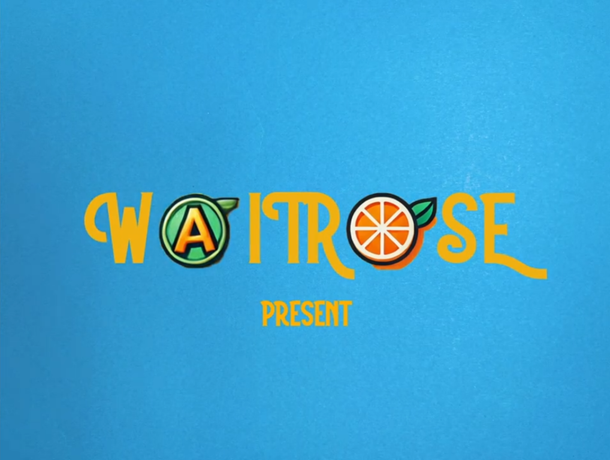
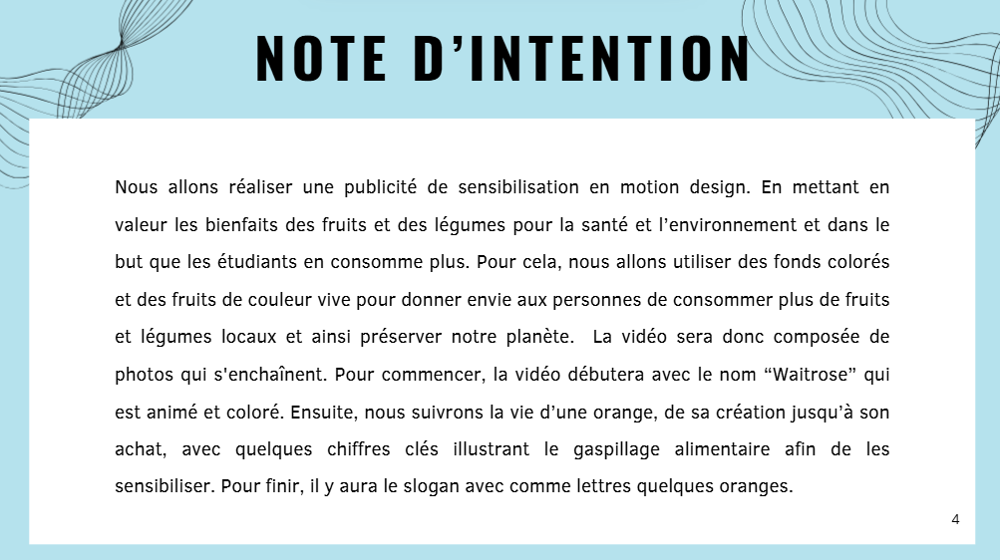
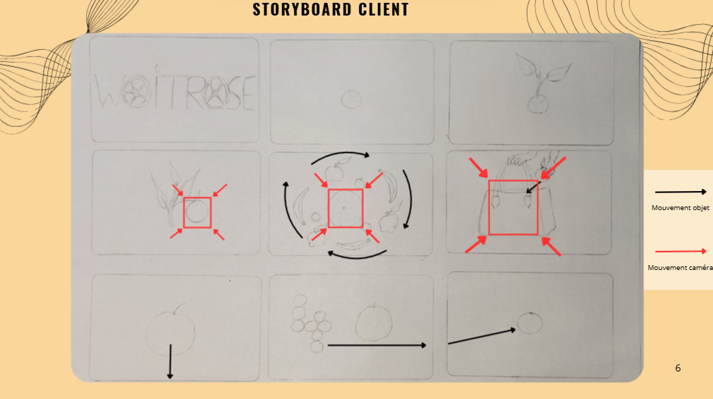
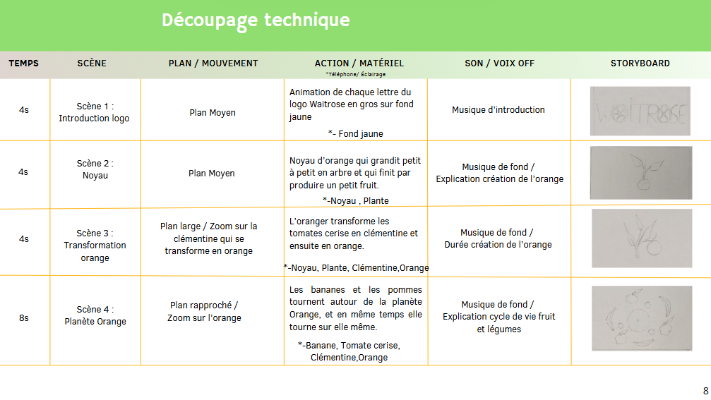

SAE 1.04 - Produire un contenu audio et vidéo
Réalisé en décembre 2024 dans le cadre du BUT MMI
Objectifs
- Concevoir et réaliser une vidéo en stop motion pour la chaîne de supermarchés Waitrose
- Promouvoir une alimentation équilibrée et lutter contre le gaspillage alimentaire auprès des étudiants
- Expérimenter la technique du stop motion
- Travailler en équipe pour produire un storyboard, un découpage technique, une voix off en anglais et un montage final sur Première Pro

Démarche
Pour cette SAE, nous avons travaillé en groupe de 3 pour produire une vidéo en stop motion pour Waitrose. L'objectif était de promouvoir une alimentation équilibrée et de lutter contre le gaspillage alimentaire. Nous avons choisi de soutenir l'idée que "manger des fruits et légumes, c’est bon pour votre santé et pour la planète". Voici les étapes que nous avons suivies :
- Phase 1 : Premier stop motion
- Phase 2 : Conception du projet
- Phase 3 : Production
- Phase 4 : Finalisation
Phase 1 : Premier stop motion
Nous avons commencé par réaliser un mini-film test en stop motion (7 secondes) avec une pomme, pour nous familiariser avec la technique.
Phase 2 : Conception du projet
Nous avons rédigé une note d’intention, réalisé un storyboard de travail, puis un storyboard client plus précis, et élaboré un découpage technique (plan par plan).



Phase 3 : Production
Nous avons tourné au studio avec un trépied, une lumière diffuse, et un fond coloré. Nous avons également réalisé la voix off en anglais et monté le film sur Da Vinci Resplve.
Phase 4 : Finalisation
Nous avons vérifié le rythme, l’esthétique générale et améliorer la coloration, la qualité sonore, et rajouter quelques bruitages sonores en fond..
Ressources utilisées
R1.07 : Écriture multimédia et narration
Cette ressource nous a guidés dans la création de tous les éléments nécessaires à la
production de la vidéo, incluant le récapitulatif de la demande, la note d'intention, le
synopsis, le storyboard, le moodboard et le découpage technique.
R1.10 : Production audio et vidéo
Cette ressource nous a aidés à maîtriser la composition de l'image, à optimiser l'éclairage
en studio, à structurer un message narratif clair et à gérer une production audiovisuelle de
A à Z.
Bilan
Ce projet m'a permis de découvrir et de bien comprendre la technique du stop motion, en comprenant l'importance de la préparation minutieuse (storyboard, découpage technique) pour obtenir un rendu professionnel. Il m'a également permis de développer mes compétences en direction artistique, en travaillant sur la lumière, les couleurs et la composition d’image, afin de rendre les fruits et légumes appétissants par exemple. La réalisation d’une voix off en anglais m’a aussi aidé à améliorer mon expression orale dans cette langue. Enfin, ce projet m'a sensibilisé à l'importance de l'organisation et du travail d'équipe pour respecter les délais et obtenir un résultat en adéquation avec les attentes d'un client (Waitrose). Cette expérience m’a renforcé dans ma capacité à concevoir et produire un projet de communication audiovisuelle de manière créative et professionnelle.
Compétences développées
Créer, composer et retoucher des visuels
Tourner et monter une vidéo (scénario, captation image et son...)